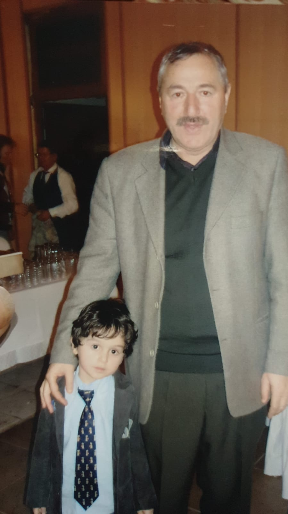

Talu Güloğlu
In March 2027, I will be joining the Baker Lab at the Institute for Protein Design at the University of Washington, Seattle for my Master's thesis. I would love to connect if you are a current or future student, or an alum!
- I am a third-semester student and scientist at the Swiss Federal Institute of Technology Zurich (ETH Zurich), supported by the German Scholarship Foundation (Studienstiftung). I strive to make biology fully computable.
- I grew up in Değirmendere, Turkey and Ulm, Germany, but in recent years I have called Zurich, Basel, Edinburgh, Toronto, and now Paris home.
- Currently, I am a Research Scientist Intern at GenBio AI in Paris. I have had the chance to work with amazing people from Genentech, Roche, the Vector Institute in Toronto, Arc Institute, and the Safari Research Group.
- Before working with the building blocks of life, I designed and built robots to play soccer, perform theatre shows, and go on rescue missions in high school.
- You can find me on X, LinkedIn, and Google Scholar.
- Please reach out to me anytime. I love to meet like-minded friends, especially if you have an interest in any kind of ball sport!
Some Research
- During my undergrad, I worked on software-hardware co-design for bioinformatics under the supervision of Prof. Mutlu at ETH Zurich. Computing systems are ill-equipped to deal with data-intensive workloads of population-scale bioinformatics. We built near-data processing systems to mitigate data preparation and processing bottlenecks for genome sequence analysis and genome graphs, leading to SAGe and GRAINS.
- As part of the University Health Network under Prof. Bo Wang in early 2026, I worked on BioReason-Pro, the first reasoning model for protein function, and led our efforts in the CAFA6 (Protein Function Prediction Challenge) competition, winning a silver medal out of 2,200+ teams (top 0.7%).
- In autumn 2025, I was part of Prescient Design (now AI4DD) at Roche/Genentech. I worked on antibody discovery and generation from sequencing data, using our own model pipeline to submit 60k+ antibodies across 13 targets for wet-lab validation (work is currently being patented).
- Now I am building world models for biology at GenBio AI, working on protein structure generation.